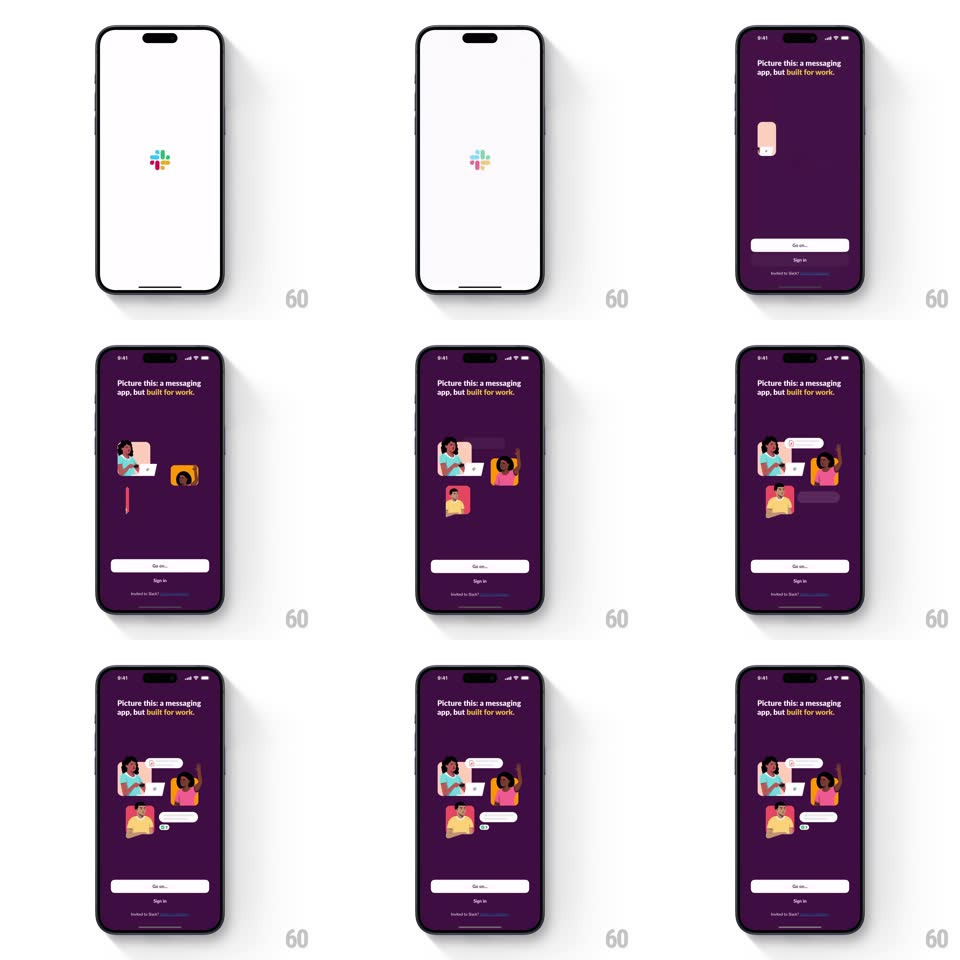

Media
Frame-by-frame

Rebuild this interaction 1:1: Slack's onboarding splash - the logo's four color quadrants scatter and morph, the screen flips to aubergine, and character illustrations pop in with a stagger around chat bubbles under "Picture this: a messaging app, but built for work."

Rebuild this interaction 1:1: Slack's onboarding splash - the logo's four color quadrants scatter and morph, the screen flips to aubergine, and character illustrations pop in with a stagger around chat bubbles under "Picture this: a messaging app, but built for work." ## Integration Integration: stack-agnostic spec - springs given as stiffness/damping, timed motions as duration + curve; map every value to your framework and animation library of choice. ## Scene Frame 1: white screen, centered Slack logo. Frame 2: dark aubergine screen, headline at top, a cluster of illustrated characters with laptops/phones arranged around white chat bubbles, a light "Go on..." pill button and "Sign in" link at the bottom. ## Motion spec Pattern: logo morph + staggered character assembly. - The logo holds 400ms, then its four quadrants scale down and spin slightly as they converge (spring ~320/18), shrinking toward a point as the background crossfades white -> aubergine (400ms). - Headline fades in (300ms) while the character cluster assembles: each character pops from scale 0.6 with a spring (~380/15 - playful overshoot), staggered 70ms, outer characters first, center last. - Chat bubbles slide into the gaps between characters (20px drift + fade, 300ms, 50ms apart), each landing with a tiny rotation settle (+-3deg). - The "Go on..." button fades up last (250ms) - the call to action arrives after the scene reads. - Characters idle with a gentle bob (+-5px, 2.4s sine, phase-offset per character). ## Calibration - Total intro under 2.5s to interactive - playful, never precious. - The aubergine is the brand moment - the white splash exists to make the flip land. ## Reduced motion Crossfade splash to assembled scene; no pops or bob. ## Don't miss - Characters assemble INTO a composition, not onto random spots - the final layout is deliberate. - The bubbles carry tiny unread badges - the product's promise sneaks into the illustration.